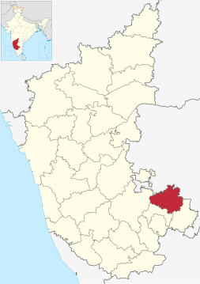

Overview of Chikkaballapur, Karnataka

- Location: Chikballapur district is a newly created district in the state of Karnataka, India. It was carved out of the existing Kolar district.
- Economy: A $400 million Pharmaceutical SEZ is being established in Chikkaballapur on 325 acres, marking the first of its kind in India.
- Demographics: As of the 2011 census, Chikkaballapur had a population of 191,122, with a literacy rate higher than the national average.
- Geography: Chikkaballapur is situated at a high elevation in the Nandi Hills region and is surrounded by picturesque hills, including Nandi Hills, Kalavaara betta, and others.
- Transportation: The city is well-connected by prominent highways, including NH-44 and State Highway 74. It also has a railway station (Chikballapur railway station) connecting it to Bengaluru and other nearby areas. The Kempegowda International Airport is the nearest international airport, located 38 km away.
- Soil: Chikkaballapur's soil composition varies, with predominant types including red soils, lateritic soils, and black soils. These soils are well-suited for agriculture and support a variety of crops.